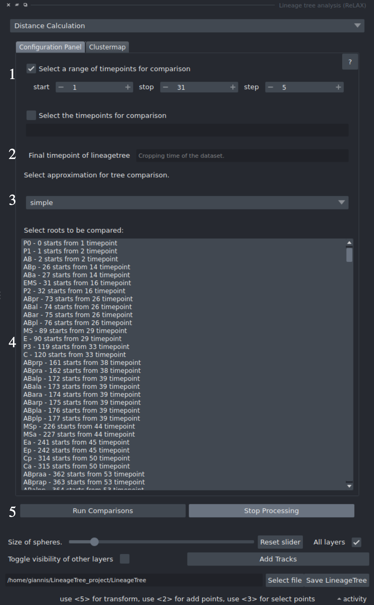
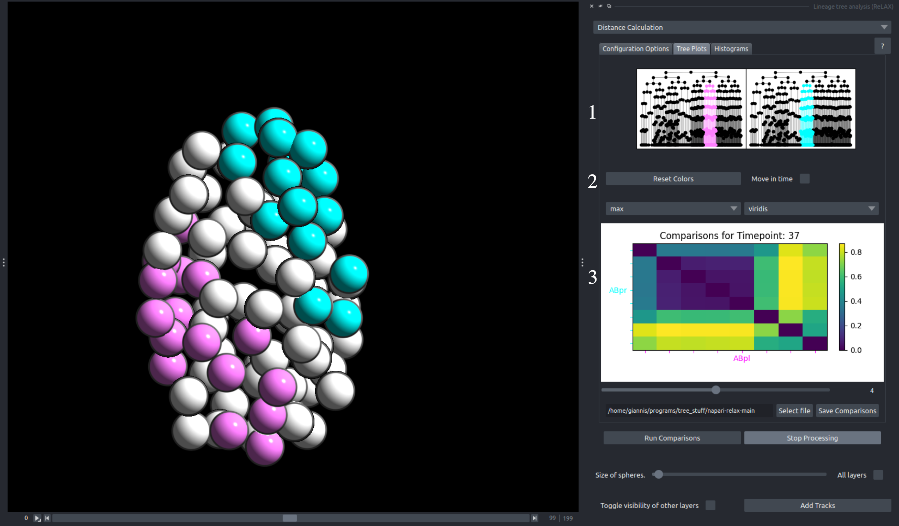

Distance Calculation
Distance Calculation focuses on systematic calculation of unordered tree edit distances of lineaeges and their sublineages across multiple timepoints, using various approximation methods.
This systematic comparison enables users to calculate the pairwise distance of clones/sublineages that spawn from a specific timepoint, across multiple timepoints.
The results of these comparisons will be shown on a clustermap, which the user can download. However, a clustermap by itself is lacking in information, or at least is difficult to interpret the results in means of morphology, for this reason we allow for users to click on this clustermap to inspect which sublineages are being compared in each specific cell!
Configuration Tab¶
This Tab is responsible for setting up the systematic pairwise distance parameters.
-
Timepoints Selection: The user has two options to set the timepoints for the comparison:
- Top: The user may set a range with steps.
- Bottom: The user may set a list of specific timepoints they want to compare.
- Time crop: The last timepoint to be included in the analysis. If the tree has nodes at later timepoints, they will be excluded (cut) from the analysis.
- Approximation / Style selection: The approximation to be used in the analysis. CAUTION: Different algorithms have different uses. For more information, visit LineageTree Tree approximations . The full tree mode is not recommended for large LineageTrees.
- Subtree selection: Specific lineages may be selected to calculate their pairwise distances. Some lineages may spawn later than the first selected timepoint due to tracking or imaging issues; they can still be included if they exist at any of the selected timepoints.
-
Start / Stop Comparisons: The user can start calculating the comparisons.
While the comparisons are being processed, the rest of the plugin and Napari remain responsive.
At any point, the user may stop processing by clicking
Stop Processing. A progress bar indicates the calculation progress.

Clustermap Tab¶
Using this component the user can calculate the unordered tree edit distance for any lineage or sublineage and the sublineages spawned by their ancestors.
- Tree plots: Displays the trees that are currently being interacted with through the clustermap, with their subtrees colored according to the colors of the viewer.
- Clustermap Configuration: Using the left combobox, the user may select their preferred normalization method according to the analysis they wish to perform. The right combobox allows the user to choose different color gradients for recoloring the clustermap.
-
Clustermap: The clustermap is generated through systematic comparisons.
There is one clustermap for each timepoint selected in the configuration component.
This clustermap is normalized by 2.
- Interaction is performed by Left Click on any element in the plot, which creates the corresponding tree graphs and recolors the selected embryo according to the compared sublineages.

Go to Starting page
Go to Tutorials